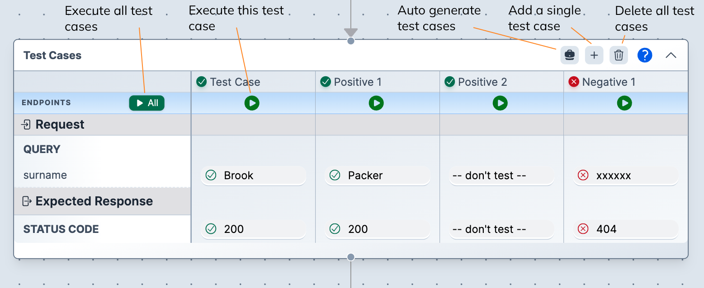

Overview
The above video explains concepts and has several examples of Endpoint configuration and associated test case operation.explains the main concepts. Use the video chapters to jump to points of interest.
The User Guide walks you through the creation of several endpoints tests and how to work with test cases. The Basic Testing is a good place to start but check out the later pages as well.
The Test Case Table
The test case table allows you to run endpoints tests. It works with data in an Endpoint component and can use any of the available values. You can test any available value but are not required to, The only required values are those marked as required in the Endpoint component.
Main components

Test case creation
Test cases can be added manually or automatically.
For simple testing, it's often easier to manually add the test cases you need.
However, for complex testing, auto-generation of tests is very powerful and saves time.
Refer to Auto-generating test cases for more details.
Deleting test cases
You can delete all test cases by pressing the trash icon in the header.
Individual test cases can be deleted by hovering on the test cases title and pressing the trash icon that appears.
Test case execution
Execute all test cases at once by pressing the >All button.
Execute a single test case by pressing the green play icon at the top of each test case column. Results will be shown in the Execution Results component.
Renaming test cases
You can rename a test case by clicking in the test case name.